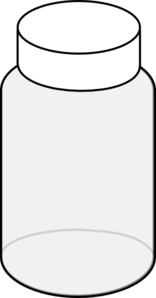
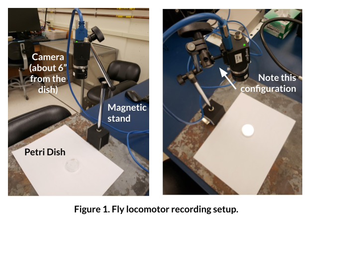
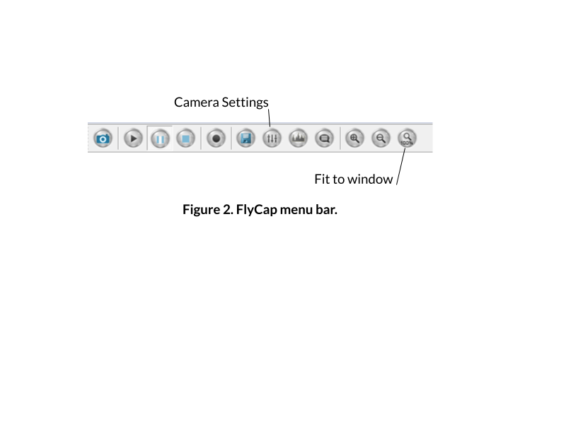
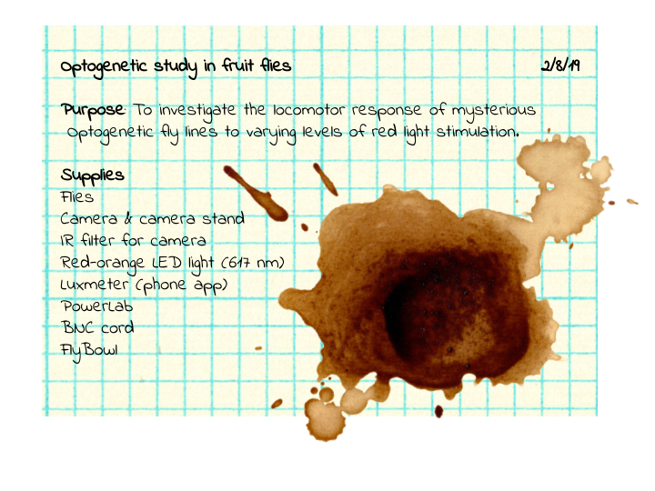

Lab #0: Modeling Neural Membranes#
In this lab, we’ll use an online membrane simulator and a breadboard to model the properties of neural membranes and passive potentials.
Neuromembrane#
Neuromembrane was made by a team of University of Alberta researchers and a company known as Atmist. Many thanks to Christelle Sabatier, Michael Wright, and Declan Ali for sharing similar lesson plans. Their ideas are integrated here.
Part I: Resting membrane potential#
First, we’ll explore the properties of the membrane that lead to a resting membrane potential. By the end of this part, you will be able to:
Explain how a negative resting membrane potential is maintained
Identify the factors that determine and maintain resting membrane potential
Use the Goldman-Hodgkin-Katz to calculate the membrane potential given the concentrations and permeabilities of K+ and Na+
Generate simulation data to illustrate the dependence of the resting membrane potential on K+
Steps#
Go to https://neuromembrane.biology.ualberta.ca/ and log in as a guest.
To open the resting membrane potential simulation, click on the top left to open a menu of stimulations. Choose “Resting Potential Simulation.”
On the right hand side, you’ll see a membrane. The area below the membrane is the inside of the cell. The area above the membrane is the outside of the cell.
This simulation will open by default without any leak channels or pumps. Let’s first add a couple of leak channels to the membrane and observe what happens. Click the plus sign next to “LEAK CHANNELS” to add a Na+ and K+ channel to the membrane.
These single channels represent many, many channels in the membrane that are allowing either Na+ or K+ to cross. By default, these will open with a relative permeability of 5:100 (Na:K). Note also that the concentration settings are also set for you — at first, there is equal [Na+] and [K+] inside and outside of the membrane.
First, we’ll observe what happens when we have more K+ permeability, but equal ion concentrations. Click on “CREATE SIMULATION” to open the stimulation page. Before running the simulation, write a 1-2 sentence prediction for what will happen in Table 1.
To run Simulation #1, click the play button. You can also change the speed so that it will run faster. What happens to the voltage over time? Why is the voltage across the membrane this value? Write your observations in Table 1.
Go back to the Settings page by choosing “Back to settings” in the simulation play menu.
In order to modify the concentration across the membrane, we’ll need a Na+/K+ pump. Click the plus button next to Na+/K+ pump to add one to the membrane.
Notice that the CONCENTRATION SETTINGS have now changed as well. Change these concentrations back to the previous settings — where all of the concentrations are 50 mM. Before running Simulation #2, write your 1-2 sentence prediction in Table 1.
Run Simulation #2 and observe what happens to the membrane potential. Has adding a Na+/K+ pump changed anything about the resting membrane potential? Why or why not? Add your observations to the table. For this simulation, note that we’re just using the Na/K pump to be able to change the concentration across the membrane. The Na/K is not operational (yet).
Go back to the settings page. In real neurons, ion concentrations are not equivalent. Change the concentrations of K+ and Na+ back to their default values to reflect more biological values across the membrane. Write your prediction for Simulation #3 in the table.
Run the simulation again and observe what happens to the membrane potential. What happens to the voltage over time? Why is the voltage across the membrane this value? Write your observations in Table 1.
Table 1. Simulation predictions & observations
Sim # |
Types of Channels |
[Ion] |
PNa/K |
Prediction |
Observation |
|---|---|---|---|---|---|
1 |
Leak channels only |
All 50 mM |
5 Na+; 100 K+ |
||
2 |
Leak channels & Na+/K+ pump |
All 50 mM |
5 Na+; 100 K+ |
||
3 |
Leak channels & Na+/K+ pump |
Na+ high outside; K+ high inside |
5 Na+; 100 K+ |
||
4 |
Leak channels & Na+/K+ pump |
Na+ high outside; K+ high inside |
100 Na+; 5 K+ |
||
5 |
Leak channels & Na+/K+ pump |
Na+ high outside; K+ high inside |
100 Na+; 100 K+ |
Using the Goldman-Hodgkin-Katz (GHK) equation for Na+ and K+ only, calculate what the voltage across the membrane should be for simulation #3 and show your work. Does this match the voltage in the simulation? Answer Q1 on the quiz. Report your answer in mV.
Here are a few hints to help you:
P is relative permeability; other constants can be found on the lecture slides.
To simplify, you may determine a constant for the first portion of the equation (RT/F) and use that for future calculations.
You can use “Insert > Equation” in Google Docs or Microsoft Word to show your work, or simply jot it on paper, take a picture, and paste it here.
Google search has a built-in scientific calculator! You can bring it up by typing any formula into the search bar. For example:
![]()
Q1. Calculation of GHK
Using the GHK equation for Na⁺ and K⁺ only, calculate the voltage across the membrane for simulation #3 and show your work. Does this match the voltage in the simulation? Report your answer in mV.
Finally, let’s check to see how much ion permeability matters. Go back to the settings page and reverse the Na+ and K+ permeabilities.
Write your prediction for Simulation #4 in Table 1.
Run Simulation #4 and observe what happens. Record your observations in Table 1 and respond to the question below. Answer Q2 on the quiz. Report your answer in mV.
Q2.
With the high permeability to Na⁺ and low permeability to K⁺, what is the resting membrane potential? Report your value in mV out to one decimal point.
On the settings page, set both the Na+ and K+ permeabilities to 100. Write your prediction in Table 1.
Run the simulation to see what happens, record your observations, and respond to the question below. Answer Q3 on the quiz.
Q3.
Which of these simulations best models a typical neural membrane?
Next, we’ll check to see whether or not the membrane potential depends on [K+]out. Reset the permeabilities and ion concentrations to the default values.
Systematically change [K+]out to fill in the table below. Hint: if you hover over the chart on the left, you’ll be able to see the precise voltage. Answer Q4 on the quiz.
Table 2. Dependence of Vrest on [K+]out
[K+]out (mM) |
Vrest (mV) |
|---|---|
4 |
|
10 |
|
20 |
|
50 |
|
200 |
Click the “Toggle Circuit Diagram” button on the top right hand corner to overlay circuit components. Answer Q5 on the quiz. You can also fill out the table below for your own notes.
Q5.
In a few words, describe what each of the following are modeling in the neuron. The first one has been done for you.
Component |
What it models |
|---|---|
I_Na |
sodium current across the membrane |
g_Na |
|
E_Na |
|
I_K |
|
g_K |
|
E_K |
Part II: Passive membrane simulation#
In this part, you’ll set up a simulation that models one portion of an axon or dendrite. By the end of this part, you will be able to:
Describe how voltage passively spreads through an axon or dendrite
Understand length and time constants
Determine how the passive spread of voltage is affected by diameter and membrane capacitance
Steps#
Go to https://neuromembrane.biology.ualberta.ca/ (if you’re not already there) and open up the “Passive Membrane Simulation” (or Cable Theory Simulation) in the menu in the top left corner.
Add an external recording electrode that is two length constants () away from your stimulating electrode by clicking the + button and changing the value after the second recording site. Answer Q6 on the quiz.
Q6.
Before running the simulation or changing any parameters, describe the setup of this “experiment” in 1-2 sentences.
Click the “Toggle Circuit Diagram” button on the top right hand corner to overlay circuit components. Answer Q7 on the quiz.
Q7.
Describe what this circuit diagram is showing us. Be sure to define each of the different components (r_m, r_i, c_m).
Re-set the cable settings and click on “CREATE SIMULATION” to run our first iteration of this passive current injection. The current will be injected starting at 10 ms, and will be injected for 30 ms total. Observe the top plot to fill out row one in Table 3. For your “observations,” take a close look at the Voltage vs. Time plot. Why is our current injection this shape when recorded across the membrane?
Table 3. Current injection results
Sim # |
Diameter |
Cm |
Peak voltage at 2 |
Distance to 2 electrode |
Voltage at 0 electrode @ 28 ms |
Voltage at 2 electrode @ 28 ms |
Observations |
|---|---|---|---|---|---|---|---|
1 |
5 µm |
1 |
|||||
2 |
2 µm |
1 |
|||||
3 |
2 µm |
2 |
The dorsal root ganglion axon of a giant blue whale has a diameter of ~2 µm. In the CABLE SETTINGS on the left, change the diameter of the simulated axon to model this axon.
Reflection
With this smaller diameter of 2 µm, do other parameters of the membrane (bottom of the CABLE SETTINGS window) change? If so, why?
Run the simulation with the smaller diameter and observe the Voltage vs Time plot again. Hint: you can use the Autoscale button (
 ) if the trace goes off the plot. Fill out Table 3 for this 2 µm cable simulation.
) if the trace goes off the plot. Fill out Table 3 for this 2 µm cable simulation.Double the capacitance of the membrane, from 1 to 2 μF/cm2. Describe what happens to the time constant and the resulting voltage over time plot with more capacitance in Table 3.
Optional: Later in the course, you may want to use the Neuromembrane simulator to model action potential.
RC Circuits#
Let’s build a circuit that models the passive membrane simulations you performed above.
Building an RC Circuit#
Read pages 4-7 of the RC circuit lab exercise in your lab manual. Then, build the circuit below. We’ll use the OUTPUT of your Powerlab to send a pulse of current through the circuit.
It helps to start with the output ends in the power rails and work your way around. The red wire from the PowerLab is the positive terminal.
CAUTION: Do not connect the + and - terminals. This will short the circuit, heat, and melt the plastic. Check that your circuit is set up properly before turning on the pulse from your computer.
Attach single BNC adapters to the + and - outputs of the PowerLab.
Alternatively, connect a BNC to double banana cable adapter to the + output of your PowerLab.
Attach a red banana cable to the + terminal and a black banana cable to the - terminal of your PowerLab.
Attach the banana cables to red and black jumper wires using alligator clips, and insert the black and red jumper wires to the power rails, as shown in the circuit.
NOTE: Ensure that all circuit components are properly inserted into the breadboard. The wires should make contact with the metal strips inside the breadboard.
Add additional jumper wires, a resistor, and a capacitor, as shown in the circuit.
We’ll use the PowerLab as our voltmeter, to record voltage in our circuit. Plug a BNC to DIN8 adapter and double banana adapter into Input 1 of the PowerLab.
Connect the ground/reference (black, -) side of the double banana adapter to the circuit ground with alligator clips.
NOTE: The “ground” in this circuit is really going to be our reference electrode. It should be connected to the black side of Input 1.
Connect the “hot” pin (red, +) of the double banana adaptor to the “record here” point on the circuit diagram.
Open LabChart with the Circuit Lab settings (http://bit.ly/labchart)
Set up the Stimulator to stimulate with 1 V for 1 second. Make sure the range of your recording channel is 1 V. Switch the stimulator to “on”.
Open Scope View and press >Start. You should see a waveform on your screen.
NOTE: You may need to Autoscale the channel (right click) to be able to see the entire trace.
The time constant should equal 𝛕 = RC. What should the time constant be (in seconds), given the resistors and capacitors in the circuit? Mind your units. Answer Q8 on the quiz.
𝛕 = _______________
We can also measure the time constant by measuring how long it takes the curve to rise or decay. One time constant (𝛕) is defined by when the circuit rises to 63.2% of its total charge (alternately, we could see how long it takes to decay 1/e, about 37%).
To empirically measure your time constant, follow these steps.
Make sure your voltage is very close to zero at baseline.
Find the maximum voltage (Vmax) that your circuit reaches.
Calculate 0.632 * Vmax
Using the marker tool (right click anywhere in the window and choose “Clamp to trace”) find the point in your trace that is equal to the value calculated in Step 3.
Move your cursor to the start of the stimulus. In the upper right corner of the window, you’ll see something that says Δt. This is the change in time since the mark on the curve and your time constant.
What is your recorded time constant with 1 V stimulation, a 100 kΩ resistor, and a 1 uF capacitor?
𝛕 = _______________
How close is the recorded time constant to the value you calculated with 𝛕 = RC?
In engineering, 5𝛕 is consisted the time it takes for a capacitor to fully charge (technically, its at 99% of full charge). The time constant is symmetrical for charging as well as losing charge. How long would it take this patch of membrane to return to baseline, then? What does that mean for computation happening in this membrane?
Record and plot your time constant with different resistors#
Next, we’ll see how the time constant of the circuit changes in response to the resistance strength. Use the following resistors in your circuit, and use the steps above to determine the time constant for each.
Resistance |
Time Constant |
|---|---|
3 kΩ |
|
15 kΩ |
|
33 kΩ |
|
100 kΩ |
|
220 kΩ |
|
330 kΩ |
Plot the time constant against the resistance. Answer Q9a and Q9b on the quiz.
The plot should have:
A line fit to it, with a description of what the trendline is (you can either show the equation or say in the figure caption what kind of trendline is plotted with the R2 value.
Labeled axes & units
At least six data points
Plotting Tips:
Python: Use the Plot Scatter notebook
Excel:
Insert your plot as a scatter plot (this will tell Excel to treat your x-axis values (resistance) as actual values, not categories.
Add a trendline by right clicking on the data, and choosing “Add Trendline”. You should add a trendline for the trend you’re expecting (we talked about this in lecture).
Make sure that none of the markers for your points are cut off. If they are, change your axes so that they fit.
Check your time constant against the literature#
Let’s circle back to biology. Are the time constants you measured similar to what you’d find in a real neuron? Check this website to look at a collection of examples from the literature: https://neuroelectro.org/ephys_prop/index.html
Choose a paper from the example above and look for the reported time constant. Is the time constant in your circuit similar? If not, why might it be different?
Troubleshooting#
Observation |
Likely Issue |
Possible Solution |
|---|---|---|
There isn’t any voltage in your circuit |
The power terminals are not connected properly Your stimulator is not on |
Make sure everything is connected correctly on your breadboard. Consult https://wiring.org.co/learning/tutorials/breadboard/index.html Check that the stimulator panel is switched on, and that you pressed Start |
Your signal is really noisy |
You’re not grounded. Your pulse is not being properly sent. |
Double check your circuit is connected correctly |
You don’t see a fin-shaped waveform |
Your Scope/Chart View is not scaled properly. Your capacitor is not properly connected or broken. |
Try autoscaling Check the capacitor placement or replace it. |
You’ve got “rabbit ears” on your waveform |
Your voltage is reversed somewhere |
Check the power terminals are connected in the right direction |
Lab #1: String Nervous Systems#
Background & Goals#
Why are we recording from a string?#
The purpose of this lab is to get familiar with the recording equipment and software that we’ll be using in this course.
First, we’ll learn how you can configure LabChart 8 to acquire data and send out pulses of electricity. Then, you’ll record the stimulus artifact (the passively conducted signal from the stimulus) from a saline-soaked piece of string. The string mimics some of the properties of the earthworm that you’ll observe in a future experiment. This will give you the opportunity to learn how to use the stimulating and recording devices on the PowerLab, as well as reduce noise and stimulus artifacts from your recordings, before you actually have to do all of this in an experiment.
Asking questions during this lab is a great idea, and will help you succeed in future experiments.
Pre-Lab#
Before the lab, watch this video and read the protocol below:
Today you will:
Configure a recording experiment in LabChart 8.
Determine how to record signals from a string.
Identify sources of electrical noise in your rig.
This lab was adapted from Experiment #1 from the BIPN 105 & BIPN 145 Lab Manuals, as well as AD Instruments.
Lab Protocol#
Supplies |
Cables & connectors |
Solutions |
|---|---|---|
String |
BNC to single banana adapter (2) |
Saline |
Dissection tray |
BNC to double banana adapter |
|
PowerLab 26T, connected to computer |
BNC to DIN8 adapter |
|
BioAmp |
Alligator clip adapters (2) |
|
Sewing pins (2) |
Banana plug cords (2) |
|
Faraday Cage |
||
Large Petri Dish |
||
Eyedropper |
I. Setting up LabChart 8#
LabChart 8 is the software we’ll be using to record electrophysiology data. Before performing our experiment, we need to set up LabChart to acquire and display the data as we want.
Turn on the PowerLab 26T.
Open LabChart 8. You should see that the PowerLab is connected with a green check mark.
Open a new experiment by choosing the New button (bottom left-hand corner).
First, we need to decide how many channels to record. Go to Setup > Channel Settings.
At the bottom of the window, change the number of channels to 3, and make sure that they are all on (box on the left is checked).
Rename the first channel “Stimulus” and the second channel “Raw Recording”.
Set the range for Channel 1 (your “Stimulus” channel) to 5 V.
Note: The range determines the range of values the PowerLab will record, and when using the BioAmp (later in this lab), it will actually change the amplification.
Set the range for Channel 2 (your “Raw Recording” channel) to 100 mV.
Make the sampling rate for Channel 1 “40k/s” and ensure that “Same sampling rate for all channels” is checked.
Make sure that the far-right column says “No calculation” for all three channels.
II. Finding sources of electrical noise#
One of the biggest issues in electrophysiology is noise from overhead lights and other electronics in the room. It’ll help to get an understanding of where noise in your rig is coming from.
Connect a DIN8-BNC adapter and a double 3-way BNC adapter to Input 2 of the PowerLab. Plug in a red banana cable to the positive (red) side of the connector.
Hold the lead (the end of the banana cable) in your hand.
In the Channel Settings window, click on Input Amplifier for Channel 2. The Input Amplifier window will show the voltage that you’re recording. This allows for precise setting of the input range for a recording channel and provides filtering options.
The signal at your rig may be variable. To adjust the sensitivity of the channel, choose an appropriate range setting from the Range drop-down list in the Input Amplifier dialog.
Note: The number displayed in the range menu indicates the maximum input voltage currently selected. Notice how as you decrease the range the vertical scale changes and the small rhythmic deflections that appear on the signal trace increase in amplitude.
Choose a range such that your signal fills about ⅔ of the window.
Observe the change in the recorded voltage with the electrode lead held overhead (near the lights) and then near the ground (away from the lights).
Try the lead inside of your Faraday cage. Is the signal more or less noisy?
Tip: Is your Faraday cage actually grounded? How could you ground it?
Questions for reflection
How does the signal change as you move the electrode lead around?
What do these sources of noise mean for our recording configuration, and our attempts to record electrical activity?
III. Recording stimulator outputs#
We’ll use our PowerLab as a stimulator that can send voltage pulses into our specimen. We can change the timing, shape, amplitude, and repetition of these stimuli via the Stimulator window in LabChart. We’ll directly record these stimuli by sending the output of the PowerLab into an input.
Change your view to Scope view, which looks like the sweeps of an oscilloscope. The advantage of Scope View is that it allows the overlay and averaging of your data.
In Scope view, set the Duration to 20 ms. This changes how long each sweep of data is.
Remove the DIN8-BNC adapter & cable from Input 2.
On the PowerLab, connect the (+) Output to Input 1 using the BNC to DIN8 cable.
Go to Setup > Stimulator to open the Stimulator window. This is the window where you can modify the shape, timing, and amplitude of the stimulus output.
Make sure that the Waveform Name is set to Pulse.
Change the range of the Pulse Height to -5 to 5 V by clicking the ruler button next to the Pulse Height option.
Configure the following by clicking and then editing the values in the window:
Parameter
Value
Start Delay
1 ms
Pulse Width
0.1 ms
Pulse Height
0.150 V
Close the Stimulator window.
Go to Setup > Stimulator Panel to open a smaller window where you can directly modify the stimulus. This window can stay open while you’re recording.
Press > Start in the main LabChart GUI.
Increase the stimulator voltage (Pulse Height) and watch the level change in the window.
Try a negative stimulus voltage.
Open the Stimulator window again and vary the delay, duration, and waveform shape, and see what happens. If your recording is cut off, how can you fix it? (Hint: see Visualization tips in Meet Your PowerLab.)
Questions for reflection
Why would you want to record the stimulus output?
Why would you want to delay the stimulus output?
Why would you want to send different shapes of waveforms?
IV. Recording the stimulus artifact#
Lastly, we’ll add an amplifier (the BioAmp) to our circuit, and use this to record from a string soaked in saline. The string doesn’t have a nervous system, but we’ll add some voltage with our stimulator and observe the change in voltage from another point on the string.
Set up your string stimulation experiment#
Your setup for the string stimulation will look like this:

Remove all of the cords from the PowerLab.
Connect your two single BNC to banana cable adapters into the (+) and (-) Outputs of the PowerLab.
Note: The color of these does not matter, but it can help to be consistent — red for the anode (+ Output) and black for the cathode (- Output).
Using banana cables, connect the (+) Output to your anode stimulating electrode (the sewing pin) and the (-) Output to the cathode stimulating electrode.
Connect the BioAmp to the PowerLab.
Connect the (+) recording, (-) recording, and ground needle electrodes to your string and into the corresponding spots on the BioAmp.
Note: The colors on the BioAmp defy convention — consult the diagram above for clarity.
Change the configuration of your recording so that you are now using the BioAmp:
Go into Setup > Channel Settings.
Make sure that BioAmp is listed under the Input Amplifier column for Channel 3.
Uncheck Channel 2 — we don’t need to record from it anymore.
Change the name of Channel 3 to “BioAmp Recording.”
We’ve removed our ability to directly record the stimulus output, so we need another way to know when the stimulator sends outputs. Open the Stimulator Settings and set the “Marker Channel” to Ch1 (your “Stimulus” channel). With this setting, LabChart will put a small tick on Channel 1 to show you when the stimulus was sent.
Note: This marker tells you when the stimulus was sent, but does not indicate the height or length of the stimulus. This means you need to label your pages with your stimulation parameters.
Stimulate your string!#

Place your string in saline in the small petri dish, and give it a few minutes to soak. If it’s not completely soaked, you will not get a stimulus artifact.
Note: If your string dries out during the experiment, you can use an eyedropper to add saline to it.
Lay the string out on the dissection tray, with the stimulating and recording electrodes laid out as in the diagram above.
Set the stimulator voltage to 1 V, and press > Start. You should see your stimulus recording on Channel 1, as you did before, but you should also now have a recording on Channel 3 (BioAmp Recording).
Change the scaling if you cannot see the entire deflection.
If you do not see anything, increase the voltage (no more than 5 V).
Note: This recorded deflection is called the stimulus artifact. This artifact can exceed the range of our amplifier. Recovery from the artifact should be rapid, however, so that the baseline is reached within one millisecond or so after the stimulus pulse.
Question for reflection
Is the amplitude of the stimulus artifact the same as the amplitude of the stimulus? Why or why not?
Increase the stimulator voltage, and stimulate again. What happens?
Note: Change the name of Scope pages, or make comments on the recording, to indicate what you’ve done during that run of the stimulus. You need to know the metadata for the experiment once you’re ready to export.
Change the stimulus to a negative voltage, and stimulate again. Does the stimulus artifact change?
Choose one of your pages where you have a stimulus artifact with a clear peak. Using the Marker tool, measure the latency from the stimulus to the beginning of your artifact. How much of a delay is there? How much of a delay should there be? (How fast does an electrical current flow?)
Change the location of the stimulating electrodes. How does this change the shape of the artifact?
Remove the ground electrode. How does this change your recording?
Save your file & export your data#
LabChart buffers files to disk in case of a power failure or computer crash, but it’s wise to save work frequently. Saving files in LabChart is the same as saving any file on your personal computer.
Please backup your LabChart data files to the Google Drive you set up at the start of the quarter.
Save the settings file for your experiment by going to File > Save As Settings File in LabChart. Save it in a safe place (not locally on the computer). You will need this settings file for the earthworm experiment.
Save the data file for your experiment by going to File > Save As and save as a LabChart Data File (.adicht).
Go to the Scope page for two of your favorite string stimulation experiments that you can compare and contrast — for example, two different voltages, or with two different distances between the stimulator and recording electrodes.
Plot your recordings (separately or on the same axes — be sure to label two different recordings if overlaid). Make sure your axes are labeled with units. You can create these plots in Python or Excel.
Copy your plots into a Word or Google document.
See your instructor’s Canvas assignment for detailed directions about what else you need to submit.
Troubleshooting#
Observation |
Likely issue |
Possible solution |
|---|---|---|
You can see the stimulus marker on Channel 1, but no stimulus artifact on Channel 3 |
Your string may not be soaked in saline well enough |
Add saline to the string |
The recording trace is cut off |
Your visualization needs to be re-scaled, or your range is too small |
Right-click on channel and choose Auto Scale (see Visualization tips above); change the range on your recording channel |
Your string recording trace has clear 60 Hz noise |
You’re not grounded, or there are ground loops |
Make sure your Faraday cage and ground electrode are both grounded to the back of the PowerLab. If this doesn’t help, consult an instructor. |
Lab #3: Earthworm Electrophysiology#
Background & Goals#
Earthworm essentials#
Earthworms are a member of the Annelida phylum, which includes segmented worms such as the ragworm and our soon-to-be-friend, the leech. We’ll be working with earthworms in the Lumbricidae family.
Earthworms are laid out with a mouth at one end, and an anus at the other. In the middle is the clitellum, a reproductive gland that can secrete a material that helps them form a cocoon. The clitellum is only visible in older worms that are ready to reproduce.
Earthworms have a closed nervous system, with one main blood vessel running down the length of their body. They breathe through their skin, so it is important to keep it moist. They crawl using muscles that are located just underneath the epidermis.

Earthworm nervous system#
Earthworms have a pretty simple brain: it’s actually a fused pair of nerve ganglia, mostly located in their third segment. The earthworm has one main nerve cord on its ventral (bottom) side with three fibers running through it: one medial giant fiber, and two lateral giant fibers.
These fibers are big bundles of axons. They serve as high-speed motor pathways that enable the worm to send movement signals throughout its body for quick, stereotyped reflexes.
Each giant fiber is made up of large individual cells (one per segment) that are electrically coupled to each other through gap junctions. This results in the rapid conduction of action potentials from cell to cell so that each giant fiber behaves as though it were a single axon. There are cross-connections between the medial and lateral fibers, so they often function as one unit.
These fibers differ in important ways. The medial giant fiber transmits information from skin cells in the anterior (mouth) end of the worm, and the lateral giant fibers transmit information from the skin cells of the posterior end of the worm.
It’s quite easy to listen in to the activity of these large fibers, even from the skin of the earthworm. Importantly, these fibers fire action potentials very rarely. This type of nervous system activity is often called sparse coding. That means that we should be able to elicit one action potential and cleanly record it.
 Images from Backyard Brains, © 2009–2026, used under a Creative Commons Attribution-ShareAlike license.
Images from Backyard Brains, © 2009–2026, used under a Creative Commons Attribution-ShareAlike license.
Properties of action potentials#
In this lab, we’ll determine the threshold, rheobase & chronaxie, refractory period, and conduction velocity for the earthworm giant fiber system. We’re recording compound action potentials (CAPs) from many axons in these fiber bundles, but the underlying principles are the same.
The threshold is defined as the minimum stimulus voltage that elicits an action potential 50% of the time. We’ll determine this with short stimuli. Stimulus voltages that don’t elicit an action potential are called subthreshold; stimulus voltages that do elicit an action potential are called suprathreshold.
In some neurons, we can elicit an action potential with a lower stimulus voltage if the stimulus length is longer. A longer stimulus length enables charge to build up that can ultimately elicit an action potential. However, there is a minimum stimulus voltage needed, even at infinite stimulus durations. The rheobase is defined as the minimum stimulus voltage that can elicit an action potential with very long durations of the stimulus. The stimulus duration at 2× the rheobase is called the chronaxie. Chronaxie is a useful measure of the excitability of a nerve — the most excitable nerves have the smallest chronaxie. We can plot this data in a strength duration curve:

The absolute refractory period is the minimum amount of time needed for a neuron to fire a second action potential. This is caused by the inactivation of sodium channels after an action potential — it takes time for them to close, to then be reopened by a depolarizing stimulus. Since we’re recording from many axons, your measured refractory period will be more variable than for a single axon. We’ll define the absolute refractory period as the time when the amplitude of the second CAP is 30% of the first.
After an action potential, the membrane of the axon is also hyperpolarized, due to the slowness of K⁺ channels closing. So, there is a period of time where the neuron requires more voltage to fire an action potential. This period is called the relative refractory period. In this lab, we’ll identify it as the period where the amplitude of the second CAP is 30–90% of the first.
In these experiments you will:
Stimulate the ventral nerve cord of the earthworm to elicit an action potential
Determine the voltage that is needed to recruit the lateral giant fibers
Estimate the absolute and relative refractory period between action potentials
Calculate the speed of an action potential
Propose your own hypothesis about conduction velocity
Conduct your experiment to test your hypothesis
References#
Bähring, R. & Bauer C.K. (2014) Easy method to examine single nerve fiber excitability and conduction parameters using intact nonanesthetized earthworms. Advances in Physiology Education 38(3): 253–264.
Bullock, T.H. (1945) Functional organization of the giant fibre system of Lumbricus. J Neurophysiol 8:54–71.
Drewes CD, Landa KB, McFall JL (1978) Giant nerve fibre activity in intact, freely moving earthworms. J Exp Biol 72:217-227.
Kladt et al. (2010) Teaching basic neurophysiology in intact earthworms. JUNE 9(1):20-35.
Rudell & Fox (1991) The Propagation potential: An Axonal response with implications for scalp-recorded EEG. Biophysical Journal 60: 556-567.
Shannon et al. (2014) Portable conduction velocity experiments using earthworms for the college and high school neuroscience teaching laboratory. Advances in Physiology Education 38(1): 62-70.
Lab Protocol#
There are multiple days dedicated to these earthworm experiments. You are encouraged to complete as many of the experiments below while you have a functioning earthworm.
Supplies |
Cables & connectors |
Solutions |
|---|---|---|
Earthworm |
BNC to single banana adapter (2) |
Earthworm saline |
Dissection tray |
Banana plug cords (2) |
Earthworm anesthetic (10% ethanol in Ringers) |
PowerLab 26T, connected to computer |
Alligator clip adapters (2) |
|
BioAmp |
Needle electrodes |
|
Sewing pins (3) |
||
Ruler |
||
Thermometer |
||
Faraday Cage |
||
Large Petri Dish |
||
Eyedropper |
I. Preparation#
Setting up the PowerLab 26T#
Our first step is making sure our PowerLab & Amplifier are wired up correctly.
Make sure the PowerLab is turned off.
Connect a single BNC adapter to the (+) Output of the PowerLab. Plug a red banana plug cable into the adapter.
Connect a single BNC to banana adapter to the (−) Output. Plug a black banana plug cable into the adapter.
Make sure that the BioAmp is connected to the PowerLab, with three different needle electrodes plugged into it.
Once you’re confident everything is connected correctly, turn on the PowerLab.
Image courtesy of ADInstruments ©
Setting up LabChart 8#
Open LabChart 8 with the settings file you saved during the string experiment. Most settings are saved within this settings file. However, it’s always good to ensure that you have the correct settings before beginning.
Note: If for some reason you cannot access your settings file, you can find one at http://bit.ly/labchart. Use the “Earthworm bioAmp Settings.”
Go to Setup > Channel Settings and confirm that you have three recording channels, and that the third (“BioAmp Recording”) is connected to the BioAmp.
Go to Setup > Stimulator and change the Stimulator settings as follows. Make sure your Marker Channel is Channel 1.
Parameter
Value
Start Delay
0.1 ms
Repeats
1
Max Repeat Rate
1 Hz
Pulse Height
0.2 V
Pulse Width
0.2 ms
Setting up your earthworm#
Note: Throughout every step of this procedure, be careful not to stretch the earthworm. This will damage the nerve and your experiment will not work.
Obtain a large, lively earthworm. Rinse it with saline if it is dirty.
Anesthetize the earthworm by placing it in the petri dish with 10% ethanol (in Earthworm Ringer’s solution) for 5 minutes.
Note: Do not leave your earthworm unattended in anesthesia. With too little anesthesia, the earthworm will move around during the experiment, and the resulting muscle electrical activity (electromyogram) will drown out the small neural electrical signals you are interested in. Too much anesthesia and the nerves will not fire.
Note #2: Your earthworm may still react to pressure after 5 minutes — you can proceed with the experiment as long as you are able to handle the worm and pin it down.
When your earthworm is anesthetized enough to pin it down, remove the earthworm from the ethanol and place it on the dissection tray with the dorsal (darker side) up.
Pin the earthworm to the tray using one sewing pin on each end of the worm.
Place the ruler down next to your worm.
Insert a third sewing pin into the anterior end of the earthworm, ~1 cm from the first pin. Connect the anode & cathode stimulating electrodes to the first two pins.
Note: The anterior end is the end nearest the clitellum, a smooth, non-segmented band.
To keep the worm anesthetized, apply a few drops of the earthworm anesthetic along the length of the earthworm with the eyedropper. Soak up any excess fluid.
Note: Make sure there isn’t a large puddle of solution — too much may interfere with your recording.
Insert the three recording needle electrodes into the worm (same configuration as the string experiment!).
Note: Make sure no wire is touching any other wire. Be careful when positioning the wires to avoid damaging the worm.
Note #2: It helps to place your recording electrodes as lateral as possible, while still holding down the worm.
II. Determining the threshold of your fibers ★#
In this experiment, you will send a stimulus into the earthworm while recording from it to determine the threshold voltage of the medial and lateral giant fibers.
Determine the threshold to activate the Medial Giant Fiber#
Open your Input Amplifier (BioAmp) for your Action Potential channel to make sure that your signal looks reasonable. You shouldn’t see 60 Hz noise, but it should look like a physiological signal. (If you have noise, see Troubleshooting.)
Open the Stimulator Panel by going to the Setup menu. Your stimulator should start with:
Max Repeat Rate: 1 Hz
Pulse Height: 0.2 V
Pulse Width: 0.2 ms
Note: Leave the Stimulator Panel open — we’ll need it throughout the experiment.
Press > Start. LabChart should be in Scope View and display one 20 ms sweep every time you click Start. For each 20 ms sweep, a stimulus pulse is generated through the PowerLab Stimulator outputs.
Examine the recording — you should see a quick deflection very shortly after your stimulus pulse. The deflection just after the start of the sweep is your stimulus artifact, caused by spread of the stimulus voltage to the recording electrodes.
Note: The stimulus artifact can be very large in amplitude, and can exceed the range of the recording amplifier. It is okay if it is cut off.
Change the Pulse Height to 1 V.
Each time you change the stimulus, click Start and a new page will appear to the left of the Scope View Window. This is the Page Explorer. Label the individual pages of your recording as you go along.
Increase the Pulse Height in 0.1 V steps until you see an inflection after the stimulus artifact. This means you’ve successfully elicited a response from the medial giant fiber! Note the stimulus voltage as an estimate of the threshold stimulus strength.
Note: If you can’t see anything, right-click on the channel to change the scaling (or use the − and + buttons on the bottom left of the channel).
Note #2: If no response is seen with a stimulus of 3.5 V or greater, contact your instructor for assistance.
Find a more accurate threshold by first reducing the stimulus by 0.2 V (or more) to diminish your response. Then, increase the stimulus by 0.05 V between each sweep. You should report a threshold (Table 1) to the hundredth decimal point (e.g. 1.25 V).
Save your data, but do not close the file.
Determine the threshold to recruit the Lateral Giant Fibers#
In the next stage, you will attempt to elicit an action potential in the lateral giant fibers.
Note: Remember to keep the earthworm anesthetized!
Set the Pulse Height to your threshold for the MGF.
Keep increasing the stimulus in 0.1 V steps until you see a second inflection in your recorded trace.
Once you see a second inflection, follow the same procedure as above to determine the threshold where you can elicit an action potential from the lateral giant fiber about 50% of the time. Record the stimulus threshold in Table 1 below.
Save your data, but do not close the file.
Note: In some worms, the median and lateral fiber responses may not be separated — they will appear to have the same threshold. Other worms may not show the second response, possibly because the lateral giant fibers are damaged.
Save your LabChart file.
Table 1. MGF and LGF compound action potential (CAP) properties.
Threshold |
Amplitude |
Latency |
|
|---|---|---|---|
MGF |
|||
LGF |
Questions for reflection
Did the shape or amplitude of the CAPs change with more stimulation voltage? What does this tell us about the action potential that is firing?
Which fiber fires an action potential sooner (with a shorter latency)?
Why would the MGF and LGF latencies differ?
III. Calculate the rheobase ★#
In Part III, we’ll change the stimulus amplitude and duration to calculate the rheobase and chronaxie of the earthworm medial giant fiber (read the Background if you forget what these are).
In the previous experiment, we gave a stimulus for 0.2 ms. Now, we’ll modify the stimulus duration and amplitude to determine the minimum stimulus requirement, regardless of duration.
Write your MGF threshold in the column for 0.20 ms stimulus duration in Table 2.
Change your Pulse Height to the threshold for your MGF.
Systematically change the duration of your stimulus (Pulse Width) to the values in the table below. As necessary, change the stimulus voltage to successfully get a CAP from your MGF.
For each duration, record the stimulus voltage (Pulse Height) values that successfully elicit a CAP in Table 2.
Note: Be sure to label your pages in Scope view accordingly. You don’t need to save the pages that do not elicit an action potential.
Table 2. Data for strength-duration curve.
Duration (ms) |
0.06 |
0.08 |
0.10 |
0.20 |
0.40 |
0.60 |
1.00 |
|---|---|---|---|---|---|---|---|
Stimulus Amplitude (V) |
IV. Determine the refractory period#
In the next step, you’ll determine the shortest time between stimuli where you can elicit two different CAPs from the MGF. In other words, we’ll determine the relative and absolute refractory period of these fibers.
Set your pulse height so that you can comfortably elicit a response from the MGF.
In Setup > Stimulator, change Repeats to 2 in order to play multiple pulses.
We also need to change the time between each stimulus. PowerLab thinks of this interval as Hz. To start, we want 15 ms between each stimulus.
Note: Remember that Hertz (Hz) means events per second. So, 1 Hz = 1 event per second, and 10 Hz = 10 events per second. 1 ÷ frequency (in Hz) = time between stimuli (in seconds).
Questions for reflection
How many milliseconds would there be between each stimulus at 10 Hz stimulation?
For 15 ms between each stimulus, what should the frequency of stimulation (in Hz) be?
Fill out this chart with the corresponding Hz values for each interval length:
Interval (ms) |
15 |
14 |
13 |
12 |
11 |
10 |
9 |
8 |
7 |
6 |
5 |
4 |
3 |
2 |
1 |
|---|---|---|---|---|---|---|---|---|---|---|---|---|---|---|---|
Freq. (Hz) |
Change your Max Repeat Rate to the equivalent frequency for 15 ms intervals.
Change your Pulse Width to 0.2 ms and your Pulse Height to the threshold for your MGF.
Press > Start to record a trial with two stimuli, separated by 15 ms.
Right-click and choose Add Marker > Clamp to Trace to place a marker at the moment the stimulus occurs. Move your cursor to the peak of the action potential. Look at the ΔV on the right-hand side to see the change in voltage from that point.
Measure the amplitude of your first and second action potentials. Determine how strong the second was relative to the first (e.g. if AP #2 amplitude was half as high as #1, it would be 50%). Record your response in row one of Table 3.
Decrease the duration between stimuli by 1 ms by changing the Repeat Rate to the Hz for a 14 ms interval.
Record the amplitudes and corresponding percentages for each stimulus interval in Table 3.
At some point, AP #2 will diminish below 30% of AP #1. We can consider this our absolute refractory period.
Note: Depending on the latency of your MGF CAP, it may be difficult to see a CAP with a stimulus interval of 1 or 2 ms. Reduce the stimulus interval to as short as you can before the MGF CAP is cut off by the second stimulus. If the shortest stimulus interval is >3 ms, you should move your pins closer together.
Save your LabChart file.
Note: If you have data that doesn’t seem quite right, you should repeat your experiment. You must be upfront about your number of repeats in your lab report, comprehensively reporting all of the data that you collected.
Table 3. Amplitudes of CAPs elicited by stimuli with decreasing stimulus intervals.
Stimulus Interval (ms) |
#1 CAP Amplitude |
#2 CAP Amplitude |
% #2/#1 |
|---|---|---|---|
15 |
|||
14 |
|||
13 |
|||
12 |
|||
11 |
|||
10 |
|||
9 |
|||
8 |
|||
7 |
|||
6 |
|||
5 |
|||
4 |
|||
3 |
|||
2 |
|||
1 |
Questions for reflection
What was the shortest duration between stimuli where the second action potential was less than 90% but more than 30% of the original CAP amplitude?
What was the shortest duration between stimuli where the second CAP was diminished below 30%?
Which of these values is your absolute refractory period, and which is the relative refractory period?
V. Compute the conduction velocity ★#
(If you’re doing this on a different day, follow the same steps for preparing LabChart & your earthworm as you did in the previous earthworm experiment.)
How far is your first recording pin (−) from your cathode (−) stimulation pin? Be sure to include units: ______________________
In PowerLab, press Start. Confirm that you have two recording channels.
Follow the same protocol as in the previous experiments to determine the threshold required to elicit an action potential from your medial giant fiber.
What is the stimulus voltage needed to elicit an MGF action potential from this worm? ______________________
Determine the MGF latency to spike#
Using the Marker tool, measure the latency (in seconds) from the peak of the stimulus artifact to your elicited action potential.
Repeat this 5 times and record your data in Table 4.
Table 4. MGF conduction velocity data.
Trial |
MGF Baseline Latency (s) |
Speed (m/s) |
MGF Experimental Latency (s) |
Speed (m/s) |
|---|---|---|---|---|
1 |
||||
2 |
||||
3 |
||||
4 |
||||
5 |
Since we know when the AP occurred and the distance between your electrodes, we can calculate the speed of the action potential. Record these values in the “Speed” column of the table above. (Reminder: speed = distance/time.)
How fast, on average, is your action potential traveling down the MGF? ______________________
VI. Design your own experiment to test the impact of temperature on MGF conduction velocity#
For this final part, you will design your own experiment to test the impact of temperature on conduction velocity. We will provide ice and a thermometer, but the rest is up to you! If you are performing this experiment on a separate worm, be sure to measure the threshold for the MGF as described above.
Work with your group to determine a protocol for running your experiment — you’ll need to include this in the Methods section of your lab report. Think about what someone needs to know in order to replicate this experiment exactly as you did.
We will test the effect of ______________________________ on ______________________________.
We will do this by…
Conduct your experiment#
Work with your group to determine a protocol for running your experiment — you’ll need to include this in the Methods section of your lab report.
Record your results in the MGF Experimental AP Latency column of Table 4. You’ll need these later for the Results section of your lab report.
Troubleshooting#
Observation |
Likely issue |
Possible solution |
|---|---|---|
The recording trace is flat |
Something is disconnected |
Check all of your connections |
I can’t see a stimulus trace in the Stimulus channel |
You don’t have a marker channel set up |
Go to Setup > Stimulator to set up the Marker Channel |
I can’t see a stimulus artifact in my action potential channel |
Your electrodes may not be in the worm, or stimulus amplitude is too weak |
Ensure all electrodes are in the worm (but not too medial), and try stimulating at 0.5 V |
My worm is bleeding |
The electrode is through the blood vessel |
Move the electrode more lateral; if you don’t get an AP after this, get a new worm |
There is a stimulus artifact, but no visible response to stimuli between 1–3 V |
Your electrodes may not be placed well, or your worm may be damaged |
Try to reposition the electrodes on a different place in the worm. If this doesn’t work, get a new worm. |
My recording just looks like a big up and down squiggle (like a sine wave) |
You’re picking up 60 Hz noise |
Ground everything (Faraday cage, ground recording pin, amplifier) to the ground pin on the back of the PowerLab. Averaging multiple trials can also get rid of noise. |
Possible opportunities for student projects#
Application of chemicals, nerve blockers, etc. to test for effects on the nervous system
Earthworm dissection & recordings (as in Gunther, 1976 or 1972)
Demonstrating facilitation of conduction rate (Bullock, 1951)
Drosophila Behavior & Optogenetics#
Background & Goals#
Drosophila as a model in neuroscience#
With just over 100,000 neurons but incredible genetic tractability, the fruit fly is an important model organism in neuroscience. About 65% of human disease-associated genes have a homolog in Drosophila melanogaster (Ugur et al., 2016). Like many model organisms, fruit flies are easy to reproduce, cheap, and easy to take care of in a lab. On top of that, they’ve been studied for more than a century. Drosophila have been used to study learning, memory, vision, sleep, addiction, courtship, and aggression, among many other behaviors.
In these labs, we’ll aim to characterize the gustatory, ethological, and locomotor behavior of transgenic fruit flies, solving a few mysteries along the way.
What’s coming up#
This module spans two days of lab:
Day 1: The Case of the Mislabeled Fly Vials — three behavioral assays (proboscis extension reflex, ethological observation, and locomotor tracking) to characterize an unknown transgenic line.
Day 2: The Case of the Missing Methods — design your own optogenetic experiment to figure out what the genetically modified neurons control.
In these labs you will:#
Operationalize and quantify the behavior of a fruit fly
Use a computer vision program to track locomotor behaviors
Identify different types of transgenic flies used for neuroscience research
Design an optogenetic experiment to interrogate neural circuit function
References#
Al-Anzi, B., Tracey, W. D., & Benzer, S. (2006). Response of Drosophila to wasabi is mediated by painless, the fly homolog of mammalian TRPA1/ANKTM1. Current Biology 16(10): 1034–1040.
Chen, Y.-C. D., & Dahanukar, A. (2020). Recent advances in the genetic basis of taste detection in Drosophila. Cellular and Molecular Life Sciences 77(6): 1087–1101.
Devineni, A. V., & Heberlein, U. (2009). Preferential ethanol consumption in Drosophila models features of addiction. Current Biology 19(24): 2126–2132.
Mandel, S. J., Shoaf, M. L., Bostwick, J. R., Combs, D. J., Trudeau, V. L., & Johnson, E. C. (2018). Behavioral aggression is regulated by Drosophila CCAP signaling. Frontiers in Neural Circuits 12: 45.
Nakamura, M., Baldwin, D., Hannaford, S., Palka, J., & Montell, C. (2002). Defective proboscis extension response (DPR), a member of the Ig superfamily required for the gustatory response to salt. Journal of Neuroscience 22(9): 3463–3472.
Trisal, S., VijayRaghavan, K., & Ramaswami, M. (2023). The proboscis extension reflex assay for evaluating taste responses in Drosophila. Bio-protocol 13(20).
Ugur, B., Chen, K., & Bellen, H. J. (2016). Drosophila tools and assays for the study of human diseases. Disease Models & Mechanisms 9(3): 235–244.
Day 1: The Case of the Mislabeled Fly Vials#
Something terrible has happened in the lab. The flies you once knew, that were once perfectly organized and labeled, are now completely jumbled. You’re pretty sure the flies are transgenic, of some sort or another. It’s up to you to figure out what type of flies these are, based on three behavioral assays: a proboscis extension reflex (PER) assay, an ethological survey, and a locomotion test.

Everyone will receive one batch of wildtype flies, and one batch of an experimental group. Ultimately, you will present your findings to the class (see Canvas for details) so that we can determine the phenotype of our mutant flies.
Supplies |
Solutions |
|---|---|
Two vials of flies (~10 WT, ~10 Mutant/Knockout) |
DI water |
Dissecting microscope |
100 mM sucrose solution |
Paintbrush |
40% EtOH in 100 mM sucrose solution |
Large petri dish (lid or base) |
|
Clear cyanoacrylate glue |
|
4 mL transfer pipette |
|
Coverslips (6 per fly group) |
|
Paper towels & KimWipes |
|
Plastic “fly recovery” box |
|
Petri dish with sylgard bottom |
|
Magnetic stand & camera |
Test I. Proboscis Extension Reflex (PER) Assay#

The proboscis extension is the reflexive extension of the mouthpart (proboscis) in response to taste stimuli. It is a fundamental feeding behavior that can be stimulated by exposing the antennae, labellar hairs, or tarsi (last segments of the leg) to an appetitive taste stimulus.
While a solution with a low concentration of ethanol is appetitive to fruit flies (serving as an olfactory cue that plant-material fermentation has begun), higher concentrations (>10% EtOH) can be aversive and toxic to fruit flies. In this assay, you’ll compare your wildtype flies to a knockout group across three solutions: sucrose (an appetitive stimulus), DI water (a neutral control), and 40% EtOH in sucrose (an aversive stimulus).
Immobilization#
Place fly tubes on ice for 2–3 minutes until flies are immobile.
Note: Keep a close eye on your flies and do not leave them on ice too long! As soon as they’re not moving, you can transfer them.
Place the bottom of the petri dish upside down on ice. Wipe away condensation before placing flies on the dish.
Using a brush, very gently isolate one fly onto the petri dish and carefully orient the fly so it is dorsal-side up (Figure E below). Be gentle — the flies are very fragile.
Prepare a coverslip: using the transfer pipette, place a tiny drop (1 μl, <2 mm in diameter) of glue on a coverslip.

Gently lower the coverslip onto the dorsal side of the fly, until just submerging the back and wings, immobilizing the fly in the glue (Figures F–G above).
Note: Only the back should be submerged in the glue. The head, proboscis, and at least one leg should be exposed — if any one of those parts is submerged, try again with another fly. If you’ve only submerged the wings, try flipping the coverslip over and using forceps to gently lower the back into the glue.
Place one damp paper towel in the plastic container on your lab bench. Ensure the box is dry. Place the coverslip in the box and close the container to regulate humidity.
Repeat with the remaining flies. You should prepare 5 wildtype and 5 knockout flies.
Allow the flies to recover for at least 1.5 hours before testing. Complete the other behavioral tests during the recovery period.
Note: Omit flies that do not show movement after 1.5 hours of recovery.
Running the PER assay#
Choose one of your responsive, immobilized flies with accessible head and legs, and place it under the dissecting microscope. Set up your lighting so you can see the legs and proboscis.
Dip the corner of a KimWipe in the sucrose solution and gently touch the tarsi with the KimWipe for 3 seconds.

a. Score the response in Data Table 1. Assign a 1 for proboscis extension (right image above) and a 0 for no extension (left image above).
b. Wait 3 seconds or until the proboscis retracts.
c. Repeat for 10 trials.
Repeat using DI water.
Repeat using 40% EtOH in sucrose.
Data Table 1: PER Responses#
Genotype |
Trial |
Sucrose |
DI Water |
40% EtOH in Sucrose |
|---|---|---|---|---|
Wildtype |
1 |
|||
Wildtype |
2 |
|||
Wildtype |
3 |
|||
Wildtype |
4 |
|||
Wildtype |
5 |
|||
Wildtype |
6 |
|||
Wildtype |
7 |
|||
Wildtype |
8 |
|||
Wildtype |
9 |
|||
Wildtype |
10 |
|||
Knockout |
1 |
|||
Knockout |
2 |
|||
Knockout |
3 |
|||
Knockout |
4 |
|||
Knockout |
5 |
|||
Knockout |
6 |
|||
Knockout |
7 |
|||
Knockout |
8 |
|||
Knockout |
9 |
|||
Knockout |
10 |
Reflection Question: Identify the positive and negative controls in this experiment. With these controls in mind, are your findings as expected?
Test II. Ethological approach to behavior#
It’s possible your flies do something different that’s not captured by a standard behavioral assay. The best way to figure this out is to watch the flies, choose several behaviors to quantify, and see if those behaviors differ between your experimental and wildtype flies.
Choosing behaviors to quantify#
Your next goal for today will be to quantify three different behaviors that your flies perform. It is up to you to define and operationalize these behaviors.
Freeze both groups of flies for 2–3 minutes until they stop moving.
Isolate ~5 flies of each type in separate petri dishes.
Note: Make sure they’re completely awake and moving before moving on to the next step. This could take about 10 minutes.
Take a few minutes to observe both batches of flies.
Choose three different behaviors that the flies do, and record them below. You also need to provide a definition for each behavior.
Table 1.
Behavior name |
Definition |
# Instances in WT |
# Instances in Mutant |
|---|---|---|---|
For 5 minutes, each person in your group should observe one behavior and record the number of instances those behaviors happen in the WT flies. Record the number of instances in the table above.
Do the same for the experimental group.
Test III. Recording locomotor behavior#
For the final test, you’ll record the movement of your two different types of flies in a petri dish and use an automated tracking program to track the velocity and heading of your flies. Your mutants might have altered locomotor behavior — this will help you test that.
Set up your camera#

First, we need to arrange the camera and petri dish so that you can get everything in frame, in focus, and well lit.
Ensure that your camera is connected via the USB cord to the computer. The camera should be plugged into a USB 3.0 slot (the blue ones).
Set up your camera and petri dish as in the figure above. You want your camera to be about 6 inches from the petri dish.
On the computer, open Point Grey FlyCap2.
Make sure that it recognizes a “Flea3” camera, and press OK.
Adjust the focal length knob on your camera (closest to end, ranges from infinity to 0.1) in order to get the image in focus.
Adjust the image on your screen using the toolbar at the top:

Isolate one fly in your petri dish.
Click on the button to open up the Camera settings (e.g., exposure).
a. Uncheck auto for brightness, exposure, and shutter.
b. Increase the exposure almost to the point where your image is overexposed. You want the flies to stand out very clearly against the white background, and the edges of the petri dish to be invisible:

Ensure that you can easily see your fly throughout all areas of the arena.
Note: Optimizing the way your fly recording looks will make the tracking much easier. Make sure there are no glares from lights in the room, no dark spots on the petri dish, and clean off any fingerprints on the glass. Every light and dark spot matters, and anything can throw off the tracking.
Set up your flies & record#

When you’re ready to record, go to File > Capture Image or Video.
A dialogue will pop up. Set up a 60 second recording with the following settings:
Filename: browse to create your own (make sure you label it as WT or Knockout). SAVE YOUR FILE LOCALLY, not on your username server. Your video file will not save correctly if you do not do this.
🔘 Capture for 60000 ms
🔘 Buffered
(Click on Videos tab)
Video Recording Type: M-JPEG
Frame Rate: 15.0
AVI Split Size: 0
JPEG Compression Quality: 75
Press Start Recording, and wait while the program records the video.
Note: This window will not close, but the message at the bottom will change.
When it is done, check that the video recorded correctly by finding the file and opening it.
Note: If it didn’t record correctly, close FlyCap, unplug the camera, and retry.
For the first fly you record, move on to the next step to ensure that your video works well for tracking. If the tracking doesn’t work well, you’ll need to adjust your lighting and/or image acquisition.
When you’re confident the tracking works well with your videos, obtain videos for three flies from each group (you’ve already done one).
When you’re done, save your videos in a clouded location for safekeeping.
Close FlyCap.
Quantify your locomotor behavior#
Now that you have videos of your specimen, you need to quantify the locomotor behavior. We’ll use a MATLAB program to do so.
Download the code we need#
Download the code for fly_tracker from GitHub: ajuavinett/fly_tracker
Extract all of the contents of the zipped folder into your local Documents folder (not a folder on your username).
Open MATLAB.
On the top bar of MATLAB, find the “Set Path” button:
In this window, click “Add with Subfolders.”
Navigate to the folder where you extracted fly_tracker. Hit Save.
Note: You might get an error about pathdef.m. Select Yes and save this file in your local Documents folder.
Test the tracking for a sample video#
In the MATLAB window, type:
[mean_velocity SEM_velocity] = BIPN145_flytrack
and press enter.
Navigate to where your movie is and select it.
In the next window, draw a rectangle (click and drag) around your entire petri dish.
Double-click inside the rectangle to initiate tracking.
Wait for the tracking to finish. A window will pop up that shows the trajectory of your fly and its velocity across time.
Note: If you’d like to edit these figures in any way, you can go to Tools > Edit Plot.
Run your analysis for a group of flies#
Once you’ve tested your tracking & recorded all of your movies, you can run this script for several movies at a time (e.g., one group of flies). You should record videos for 3 WT flies and 3 mutant flies. Do this by re-doing steps 7–11 above, but select all of the videos for one group of flies in the window where you are asked to pick a movie. After you’ve done the analysis for your wildtype flies, run the BIPN145_flytrack script again with your mutant fly videos.
The script outputs a variable called mean_velocity. This will show the mean velocity (in mm/s) for each of your videos. SEM_velocity is the standard error of the mean of the velocity for these videos.
To generate a mean value for the video(s) you just tracked, type:
mean(mean_velocity)
and press enter.
Record these values in the table below (you’ll ultimately want to plot these).
Table 2. Comparison of mean velocities for control and mutant flies.
Control |
Mutant |
|
|---|---|---|
Mean |
||
SEM |
Troubleshooting#
Observation |
Likely issue(s) |
Possible solution |
|---|---|---|
The camera output is black |
Lens cap is on |
Remove the lens cap |
Camera not recognized |
Camera not plugged in |
Plug in the camera |
Video file is not recognized in MATLAB or the movie is the wrong length/size |
You wrote the video file to the server |
You need to re-record your video but with the file saved directly to the computer locally |
Fly does not extend proboscis to sucrose |
Fly is dehydrated or improperly mounted |
Check humidity in recovery box; verify proboscis and at least one leg are not stuck in glue |
All flies look the same in tracking video |
Lighting/exposure issues |
Increase exposure so flies stand out as dark spots on a fully white background |
Day 2: The Case of the Missing Methods#
Just when you thought everything was back to normal in the lab, a remarkably inconveniently placed coffee spill completely drenches several pages of the notes given to you from your mentor.
Unfortunately, those pages detailed all of the methods that you needed in order to perform your experiment. You’ve managed to save the supplies list, at least:

Hope is not lost. You’ve got some supplies, and you suspect that this study had something to do with the role of the genetically-modified neurons. Certain neurons have optogenetic channels, but what do those neurons actually control?
It might take a little bit of research to refresh your memories about those transgenic flies, but that’s easy enough. And you’ve done at least some fly behavior before — you’re pretty much the fly whisperer.
You can re-write the protocol and get some interesting results, can’t you?
Tips for designing your experiment#
You can control the intensity of the light source through LabChart by following these steps:
Plug the BNC input on the light into the OUTPUT of the PowerLab using a BNC cable.
Program the stimulator (Setup > Stimulator) to send different pulses with heights from 2V – 10V. You should notice that the intensity of the light changes with more voltage.
Do not stimulate your flies at higher than 1 Hz frequency or with stimulus pulses longer than 0.5 seconds.
Measure the intensity of the light using a phone app luxmeter (we recommend Lux Light Meter Free). You should measure the light intensity from the same distance as you are using it in the experiment.
Don’t forget about control groups! It may help to compare these flies to each other, as well as to wildtype flies. We have wildtype flies if you need them.
You will need to put the red light within several inches of your flies in order to see an effect of the stimulation.
Fly Tracker (Local)#
In this lab, you’ll use a Python script to track the position and velocity of a fruit fly from video recordings. The script will detect the fly against a light background, track its movement frame-by-frame, and output position and velocity data as CSV files, along with plots.
At the end of this notebook, you’ll be able to:
Run the fly tracker script on your own video recordings
Load and visualize tracking and velocity data in Python
Customize your plots for your lab report
Part 1: Running the Fly Tracker Script#
The fly tracker is a Python script that you’ll run from the command line. Follow the steps below to get set up.
Step 1: Open Anaconda Prompt#
Click the Windows search bar (bottom-left of your screen) and type Anaconda.
Click Anaconda Prompt to open it. You should see a black terminal window.
Note
This is intended to be run on the BIPN 145 Windows lab computers in York 1310. If you are running this on your own Mac computer, you can search for Python and run it that way. If you’re running it on your own Windows computer, you’ll need to download Python or Anaconda.
Step 2: Download the Scripts#
In the Anaconda Prompt, first use the following to move into your folder. Replace USER with the UCSD username (not including @ucsd.edu) for the person that is logged into the computer.
Tip
Copying and pasting into the Anaconda Prompt: You can copy commands from this page by clicking the copy button (📋) at the top-right of each code block and using Ctrl+V to paste into the command line.
cd C:\Users\USER
Then, run the following commands to download the setup and fly tracker scripts:
curl -o setup.py https://raw.githubusercontent.com/ajuavinett/fly_tracker/master/setup.py
curl -o BIPN145_flytrack.py https://raw.githubusercontent.com/ajuavinett/fly_tracker/master/BIPN145_flytrack.py
If you already have older versions of these scripts, this will overwrite them with the latest versions. You can also download the scripts manually from the fly_tracker GitHub page.
Step 3: Install Required Packages#
Run the setup script to install the required Python packages. You only need to do this once per computer:
python setup.py
You should see a message confirming that each package is installed. Once you see “Setup complete!”, you’re ready to go.
Step 4: Know Where Your Video File(s) Are#
Make sure you know where your fly video file(s) (.avi, .mp4, etc.) are saved on your computer. When you run the script, a file picker window will pop up and you can navigate to them from there.
Step 5: Run the Script#
In the Anaconda Prompt, type:
python BIPN145_flytrack.py
The script will walk you through everything interactively:
Select your video(s) — A file picker dialog will pop up. Navigate to your video file(s), select them, and click Open.
Draw the ROI — A window will pop up showing the first frame of your video. Click and drag to draw a rectangle around the dish/arena (and only around the dish – make it as snug as possible!), then press Enter or Space to confirm. Press C to cancel and redraw.
Wait for tracking — The script will process each frame. You’ll see progress updates (10%, 20%, etc.). This will take a few minutes to run per video.
View results — When done, plots will appear will save automatically along with CSV files containing the tracking results. You can either use the plots that are saved or modify them (see below).
Step 6: Find Your Output Files#
After the script finishes, you’ll find two CSV files for each video in the same folder as your video:
File |
Contents |
|---|---|
|
Time (s), X position (cm), Y position (cm) |
|
Time (s), Velocity (mm/s) |
If you need to edit them, you can open these in Excel, Google Sheets, or load them into Python (see below).
Part 2: Working with Your Data in Python (Optional)#
The cells below will help you load your CSV output files and create customized plots in case you need to adjust anything after running the tracking. This is useful if you want to adjust axis labels, colors, or combine data from multiple flies for your lab report.
Task: Run the cell below to import the packages we’ll need.
import numpy as np
import matplotlib.pyplot as plt
from matplotlib.collections import LineCollection
print('Packages imported!')
Packages imported!
Upload your CSV files#
If you’re running this notebook in Google Colab, run the cell below to upload your tracking and velocity CSV files. If you’re running locally, you can skip this cell and just set the file paths directly.
Task: Run the cell below and upload your
_tracking.csvand_velocity.csvfiles.
try:
from google.colab import files
uploaded = files.upload()
filenames = list(uploaded.keys())
tracking_file = [f for f in filenames if 'tracking' in f][0]
velocity_file = [f for f in filenames if 'velocity' in f][0]
print(f'Tracking file: {tracking_file}')
print(f'Velocity file: {velocity_file}')
except ImportError:
# Running locally — set your file paths here
tracking_file = 'yourvideo_tracking.csv' # <-- change this
velocity_file = 'yourvideo_velocity.csv' # <-- change this
print(f'Using local files: {tracking_file}, {velocity_file}')
Using local files: yourvideo_tracking.csv, yourvideo_velocity.csv
Load the data#
Now let’s load both CSV files using numpy. Each file has a header row, so we skip it with skiprows=1.
Task: Run the cell below to load your data.
# Load tracking data: columns are Time (s), X (cm), Y (cm)
tracking = np.loadtxt(tracking_file, delimiter=',', skiprows=1)
time_pos = tracking[:, 0]
x_pos = tracking[:, 1]
y_pos = tracking[:, 2]
# Load velocity data: columns are Time (s), Velocity (mm/s)
vel_data = np.loadtxt(velocity_file, delimiter=',', skiprows=1)
time_vel = vel_data[:, 0]
velocity = vel_data[:, 1]
print(f'Tracking data: {len(time_pos)} frames')
print(f'Velocity data: {len(time_vel)} time bins')
print(f'Mean velocity: {np.nanmean(velocity):.2f} mm/s')
print(f'SD velocity: {np.nanstd(velocity):.2f} mm/s')
---------------------------------------------------------------------------
FileNotFoundError Traceback (most recent call last)
Cell In[3], line 2
1 # Load tracking data: columns are Time (s), X (cm), Y (cm)
----> 2 tracking = np.loadtxt(tracking_file, delimiter=',', skiprows=1)
3 time_pos = tracking[:, 0]
4 x_pos = tracking[:, 1]
File /opt/miniconda3/lib/python3.12/site-packages/numpy/lib/_npyio_impl.py:1395, in loadtxt(fname, dtype, comments, delimiter, converters, skiprows, usecols, unpack, ndmin, encoding, max_rows, quotechar, like)
1392 if isinstance(delimiter, bytes):
1393 delimiter = delimiter.decode('latin1')
-> 1395 arr = _read(fname, dtype=dtype, comment=comment, delimiter=delimiter,
1396 converters=converters, skiplines=skiprows, usecols=usecols,
1397 unpack=unpack, ndmin=ndmin, encoding=encoding,
1398 max_rows=max_rows, quote=quotechar)
1400 return arr
File /opt/miniconda3/lib/python3.12/site-packages/numpy/lib/_npyio_impl.py:1022, in _read(fname, delimiter, comment, quote, imaginary_unit, usecols, skiplines, max_rows, converters, ndmin, unpack, dtype, encoding)
1020 fname = os.fspath(fname)
1021 if isinstance(fname, str):
-> 1022 fh = np.lib._datasource.open(fname, 'rt', encoding=encoding)
1023 if encoding is None:
1024 encoding = getattr(fh, 'encoding', 'latin1')
File /opt/miniconda3/lib/python3.12/site-packages/numpy/lib/_datasource.py:192, in open(path, mode, destpath, encoding, newline)
155 """
156 Open `path` with `mode` and return the file object.
157
(...) 188
189 """
191 ds = DataSource(destpath)
--> 192 return ds.open(path, mode, encoding=encoding, newline=newline)
File /opt/miniconda3/lib/python3.12/site-packages/numpy/lib/_datasource.py:529, in DataSource.open(self, path, mode, encoding, newline)
526 return _file_openers[ext](found, mode=mode,
527 encoding=encoding, newline=newline)
528 else:
--> 529 raise FileNotFoundError(f"{path} not found.")
FileNotFoundError: yourvideo_tracking.csv not found.
Plot the fly path#
The plot below shows the fly’s path through the arena, color-coded by time. Earlier positions are shown in purple/blue, and later positions in yellow/green.
Task: Run the cell below to plot the fly path. Edit the axis labels, title, or colormap (
cmap) if you’d like to customize it.
# Set the diameter of your dish (should match what you used in the script)
diameter = 4 # cm
fig, ax = plt.subplots(figsize=(6, 6))
# Create color-coded path
valid = ~np.isnan(x_pos) & ~np.isnan(y_pos)
points = np.array([x_pos[valid], y_pos[valid]]).T.reshape(-1, 1, 2)
segments = np.concatenate([points[:-1], points[1:]], axis=1)
lc = LineCollection(segments, cmap='viridis', linewidth=2)
lc.set_array(time_pos[valid][:-1])
ax.add_collection(lc)
ax.set_xlim(0, diameter)
ax.set_ylim(diameter, 0) # Inverted to match video orientation
ax.set_aspect('equal')
# --- Customize these labels for your report ---
ax.set_xlabel('X-coordinate (cm)', fontsize=12)
ax.set_ylabel('Y-coordinate (cm)', fontsize=12)
ax.set_title('Fly Path', fontsize=14)
cbar = fig.colorbar(lc, ax=ax, orientation='horizontal', pad=0.1)
cbar.set_label('Time (s)')
plt.tight_layout()
plt.show()
Plot velocity over time#
The plot below shows how the fly’s velocity changes over the course of the recording.
Task: Run the cell below to plot the velocity trace. Edit the labels, colors, or axis limits as needed.
fig, ax = plt.subplots(figsize=(10, 4))
ax.plot(time_vel, velocity, linewidth=1.5, color='steelblue')
# --- Customize these for your report ---
ax.set_xlabel('Time (s)', fontsize=12)
ax.set_ylabel('Velocity (mm/s)', fontsize=12)
ax.set_title('Fly Velocity Over Time', fontsize=14)
# Uncomment the line below to set custom axis limits:
# ax.set_xlim(0, 60) # e.g., first 60 seconds
# ax.set_ylim(0, 20) # e.g., max 20 mm/s
plt.tight_layout()
plt.show()
print(f'Mean velocity: {np.nanmean(velocity):.2f} mm/s')
print(f'SD velocity: {np.nanstd(velocity):.2f} mm/s')
Compare multiple flies (optional)#
If you have velocity data from multiple flies, you can plot them together and compute summary statistics.
Task: Upload additional velocity CSV files and add their filenames to the list below.
# Add your velocity CSV filenames here
velocity_files = [
'fly1_velocity.csv', # <-- change these
'fly2_velocity.csv',
# 'fly3_velocity.csv',
]
fig, ax = plt.subplots(figsize=(10, 5))
all_means = []
for i, vf in enumerate(velocity_files):
data = np.loadtxt(vf, delimiter=',', skiprows=1)
t = data[:, 0]
v = data[:, 1]
ax.plot(t, v, linewidth=1.5, label=f'Fly {i + 1}')
all_means.append(np.nanmean(v))
ax.set_xlabel('Time (s)', fontsize=12)
ax.set_ylabel('Velocity (mm/s)', fontsize=12)
ax.set_title('Velocity Comparison', fontsize=14)
ax.legend()
plt.tight_layout()
plt.show()
print(f'\nMean velocity across flies: {np.mean(all_means):.2f} mm/s')
print(f'SD across flies: {np.std(all_means):.2f} mm/s')
About this Notebook#
This notebook was created by Ashley Juavinett for classes at UC San Diego. The fly tracker script is based on MATLAB code by Jeff Stafford.
Fly Tracker (Colab)#
This notebook tracks a fruit fly against a light background in a video, calculates its position and velocity over time, and produces path and velocity plots.
Original MATLAB code by Jeff Stafford, modified by A. Juavinett for BIPN 145.
How to use#
Run the Setup cell to install dependencies.
Upload your video (
.avi,.mp4, etc.) using the upload cell.Set your parameters (dish diameter, frame rate).
Draw your ROI on the first frame.
Run the remaining cells to track the fly and view results.
Setup#
#@title Install & import packages { display-mode: "form" }
import numpy as np
import cv2
import matplotlib.pyplot as plt
import matplotlib.colors as mcolors
from matplotlib.collections import LineCollection
from scipy.spatial.distance import euclidean
from google.colab import files, output
from IPython.display import display, clear_output, HTML, Image as IPImage
import ipywidgets as widgets
import os
import base64
# Initialize result containers (run once, then append to them)
if 'all_corrected' not in dir():
all_corrected = []
all_velocity = []
print('Initialized result containers.')
else:
print(f'Existing results: {len(all_corrected)} video(s) processed so far.')
print('All packages loaded successfully!')
---------------------------------------------------------------------------
ModuleNotFoundError Traceback (most recent call last)
Cell In[1], line 3
1 #@title Install & import packages { display-mode: "form" }
2 import numpy as np
----> 3 import cv2
4 import matplotlib.pyplot as plt
5 import matplotlib.colors as mcolors
ModuleNotFoundError: No module named 'cv2'
Mount your drive#
Run the cell below to mount your drive, which should contain your video files.
from google.colab import drive
drive.mount('/content/drive')
Select Video File#
Update the path below to your video file. You’ll process one video at a time, and results will accumulate in all_corrected and all_velocity.
Tip: In the window at left, you can use the three vertical dots to copy and paste the path to your video file.
# Set the current video file to process
current_video = '/content/drive/MyDrive/video1.avi'
print(f'Current video: {current_video}')
Set Parameters#
Modify the frame_rate below as needed.
frame_rate = None # auto-detect from video (override with e.g. frame_rate = 30 if needed)
diameter = 4 # Diameter of the dish in centimeters
search_size = 20 # Search size for fly detection (in pixels)
per_pixel_threshold = 1.5
bin_size = 1 # Bin size for velocity calculation (in seconds)
height = diameter
width = diameter
print('Frame rate will be auto-detected from each video.')
#@title Define helper functions (fly_finder, dist_filter, interpolate_pos) { display-mode: "form" }
def fly_finder(roi_image, half_search, threshold, flip=True):
"""
Find a fly (dark region) in a grayscale image.
Locates the darkest pixel, retrieves a search area around it,
and finds the center of pixel intensity.
Returns (x, y) position or (NaN, NaN) if not found.
"""
if flip:
val = np.nanmin(roi_image)
else:
val = np.nanmax(roi_image)
ys, xs = np.where(roi_image == val)
xpos = np.mean(xs)
ypos = np.mean(ys)
h, w = roi_image.shape
left = max(int(round(xpos) - half_search), 0)
right = min(int(round(xpos) + half_search), w - 1)
top = max(int(round(ypos) - half_search), 0)
bottom = min(int(round(ypos) + half_search), h - 1)
search_area = roi_image[top:bottom+1, left:right+1].astype(np.float64)
if flip:
search_area = 255.0 - search_area
total = np.sum(search_area)
if total >= threshold:
x_indices = np.arange(search_area.shape[1])
y_indices = np.arange(search_area.shape[0])
x = np.sum(search_area @ x_indices) / total + left
y = np.sum(search_area.T @ y_indices) / total + top
return x, y
else:
return np.nan, np.nan
def dist_filter(array, tele_dist_threshold, num_avg=5):
"""
Teleport filter: removes spurious points where fly position
jumps far from the mean of surrounding frames.
array: Nx3 array [time, x, y]
"""
filtered = array.copy()
n = len(filtered)
x = filtered[:, 1]
y = filtered[:, 2]
def rolling_nanmean(arr, window, forward=False):
"""Rolling mean over 'window' preceding (or following) valid elements."""
valid = (~np.isnan(arr)).astype(np.float64)
filled = np.where(np.isnan(arr), 0.0, arr)
cs_val = np.concatenate([[0.0], np.cumsum(filled)])
cs_cnt = np.concatenate([[0.0], np.cumsum(valid)])
idx = np.arange(n)
if forward:
starts = idx + 1
ends = np.minimum(n, idx + 1 + window)
else:
starts = np.maximum(0, idx - window)
ends = idx
sum_v = cs_val[ends] - cs_val[starts]
cnt_v = cs_cnt[ends] - cs_cnt[starts]
with np.errstate(invalid='ignore', divide='ignore'):
return np.where(cnt_v > 0, sum_v / cnt_v, np.nan)
last_x = rolling_nanmean(x, num_avg)
last_y = rolling_nanmean(y, num_avg)
next_x = rolling_nanmean(x, num_avg, forward=True)
next_y = rolling_nanmean(y, num_avg, forward=True)
dist_last = np.sqrt((x - last_x) ** 2 + (y - last_y) ** 2)
dist_next = np.sqrt((x - next_x) ** 2 + (y - next_y) ** 2)
valid_pts = ~np.isnan(x)
tele_mask = valid_pts & (
(dist_last > tele_dist_threshold) | (dist_next > tele_dist_threshold)
)
tele_mask[:num_avg] = False
tele_mask[n - num_avg:] = False
filtered[tele_mask, 1:3] = np.nan
tele_count = int(tele_mask.sum())
edge_indices = list(range(0, min(5, n - 1))) + list(range(max(0, n - 6), n - 1))
for idx in edge_indices:
if np.any(np.isnan(filtered[idx, 1:3])) or np.any(np.isnan(filtered[idx + 1, 1:3])):
continue
if euclidean(filtered[idx, 1:3], filtered[idx + 1, 1:3]) > tele_dist_threshold / 2:
filtered[idx, 1:3] = np.nan
tele_count += 1
print(f'{tele_count} points removed by the teleportation filter.')
return filtered
def interpolate_pos(array, inter_dist_threshold):
"""
Linearly interpolate fly position between NaN gaps,
as long as the gap endpoints are within inter_dist_threshold.
array: Nx3 array [time, x, y]
"""
result = array.copy()
interp_count = 0
x = result[:, 1]
y = result[:, 2]
nan_mask = np.isnan(x)
if not nan_mask.any():
print('0 points recovered through interpolation.')
return result
padded = np.concatenate([[False], nan_mask, [False]])
diff = np.diff(padded.astype(np.int8))
starts = np.where(diff == 1)[0]
ends = np.where(diff == -1)[0] - 1
for s, e in zip(starts, ends):
last_idx = s - 1
next_idx = e + 1
if last_idx < 0 or next_idx >= len(result):
continue
last_pt = result[last_idx, 1:3]
next_pt = result[next_idx, 1:3]
if np.any(np.isnan(last_pt)) or np.any(np.isnan(next_pt)):
continue
if euclidean(last_pt, next_pt) <= inter_dist_threshold:
gap = next_idx - last_idx
fracs = np.arange(1, gap) / gap
result[s:e + 1, 1] = last_pt[0] + fracs * (next_pt[0] - last_pt[0])
result[s:e + 1, 2] = last_pt[1] + fracs * (next_pt[1] - last_pt[1])
interp_count += e - s + 1
print(f'{interp_count} points recovered through interpolation.')
return result
def boundary_filter(array, diameter):
"""
Remove points that fall outside the circular dish.
"""
filtered = array.copy()
cx, cy = diameter / 2, diameter / 2
radius = diameter / 2
x = filtered[:, 1]
y = filtered[:, 2]
dist_from_center = np.sqrt((x - cx) ** 2 + (y - cy) ** 2)
outside = dist_from_center > radius
outside = outside & ~np.isnan(x)
filtered[outside, 1:3] = np.nan
count = np.sum(outside)
if count > 0:
print(f' {count} points removed by the boundary filter (outside dish).')
return filtered
print('Helper functions defined.')
#@title Interactive ROI selector — click and drag on the image { display-mode: "form" }
# Read first frame and encode as base64 for display
cap = cv2.VideoCapture(current_video)
ret, frame = cap.read()
cap.release()
if not ret:
raise ValueError(f'Could not read first frame of {current_video}')
frame_rgb = cv2.cvtColor(frame, cv2.COLOR_BGR2RGB)
img_h, img_w = frame_rgb.shape[:2]
# Encode frame as PNG base64
_, buf = cv2.imencode('.png', cv2.cvtColor(frame_rgb, cv2.COLOR_RGB2BGR))
img_b64 = base64.b64encode(buf).decode('utf-8')
print(f'Image size: {img_w} x {img_h} pixels')
print('Click and drag on the image below to select the ROI, then click "Confirm ROI".\n')
# JavaScript/HTML interactive ROI selector
html_code = f"""
<div id="roi-container" style="position:relative; display:inline-block; cursor:crosshair;">
<canvas id="roi-canvas" width="{img_w}" height="{img_h}"
style="max-width:100%; height:auto; border:1px solid #ccc;"></canvas>
</div>
<br>
<button id="roi-confirm-btn" style="font-size:16px; padding:8px 20px; background:#4CAF50;
color:white; border:none; border-radius:4px; cursor:pointer; margin-top:8px;">
Confirm ROI
</button>
<p id="roi-info" style="font-size:14px; color:#333;"></p>
<script>
(function() {{
var canvas = document.getElementById('roi-canvas');
var ctx = canvas.getContext('2d');
var img = new window.Image();
img.src = 'data:image/png;base64,{img_b64}';
var drawing = false;
var x0 = 0, y0 = 0, x1 = 0, y1 = 0;
var hasROI = false;
// Scale factor: canvas CSS size vs actual pixel size
function getScale() {{
var rect = canvas.getBoundingClientRect();
return {{ sx: canvas.width / rect.width, sy: canvas.height / rect.height }};
}}
img.onload = function() {{
ctx.drawImage(img, 0, 0);
}};
function redraw() {{
ctx.clearRect(0, 0, canvas.width, canvas.height);
ctx.drawImage(img, 0, 0);
if (hasROI) {{
var rx = Math.min(x0, x1);
var ry = Math.min(y0, y1);
var rw = Math.abs(x1 - x0);
var rh = Math.abs(y1 - y0);
ctx.strokeStyle = 'red';
ctx.lineWidth = 3;
ctx.strokeRect(rx, ry, rw, rh);
document.getElementById('roi-info').innerText =
'ROI: x=' + Math.round(rx) + ', y=' + Math.round(ry) +
', w=' + Math.round(rw) + ', h=' + Math.round(rh);
}}
}}
canvas.addEventListener('mousedown', function(e) {{
var rect = canvas.getBoundingClientRect();
var scale = getScale();
x0 = (e.clientX - rect.left) * scale.sx;
y0 = (e.clientY - rect.top) * scale.sy;
drawing = true;
hasROI = false;
}});
canvas.addEventListener('mousemove', function(e) {{
if (!drawing) return;
var rect = canvas.getBoundingClientRect();
var scale = getScale();
x1 = (e.clientX - rect.left) * scale.sx;
y1 = (e.clientY - rect.top) * scale.sy;
hasROI = true;
redraw();
}});
canvas.addEventListener('mouseup', function(e) {{
drawing = false;
}});
document.getElementById('roi-confirm-btn').addEventListener('click', function() {{
if (!hasROI) {{
document.getElementById('roi-info').innerText =
'No ROI drawn yet! Click and drag on the image first.';
return;
}}
var rx = Math.round(Math.min(x0, x1));
var ry = Math.round(Math.min(y0, y1));
var rw = Math.round(Math.abs(x1 - x0));
var rh = Math.round(Math.abs(y1 - y0));
// Send ROI back to Python via Colab's kernel eval
google.colab.kernel.invokeFunction('set_roi', [rx, ry, rw, rh], {{}});
document.getElementById('roi-info').innerText =
'ROI CONFIRMED: x=' + rx + ', y=' + ry + ', w=' + rw + ', h=' + rh;
document.getElementById('roi-confirm-btn').style.background = '#888';
document.getElementById('roi-confirm-btn').innerText = 'ROI Confirmed!';
}});
}})();
</script>
"""
# Register a callback so JavaScript can send the ROI to Python
roi_result = {'value': None}
def set_roi(x, y, w, h):
roi_result['value'] = (int(x), int(y), int(w), int(h))
print(f'ROI received: x={int(x)}, y={int(y)}, w={int(w)}, h={int(h)}')
output.register_callback('set_roi', set_roi)
display(HTML(html_code))
# Run this cell AFTER you have confirmed your ROI above
roi = roi_result['value']
if roi is None:
raise ValueError("No ROI selected! Go back and draw a rectangle on the image, then click 'Confirm ROI'.")
print(f'Using ROI: x={roi[0]}, y={roi[1]}, width={roi[2]}, height={roi[3]}')
Track Fly in Video(s)#
This processes each video frame-by-frame:
Creates a background image from 100 random frames
Subtracts the background from each frame
Finds the fly position using center-of-mass of dark pixels
Applies teleportation filter and interpolation
Converts pixel positions to centimeters
#@title Fly tracking engine — process_video() { display-mode: "form" }
def process_video(video_path, roi, diameter, frame_rate, search_size, per_pixel_threshold):
"""
Process a single fly video and return the corrected position array.
Returns (Nx3 array [time_s, x_cm, y_cm], frame_rate).
"""
height = diameter
width = diameter
roi_x, roi_y, roi_w, roi_h = roi
cap = cv2.VideoCapture(video_path)
fps = cap.get(cv2.CAP_PROP_FPS)
total_frames = int(cap.get(cv2.CAP_PROP_FRAME_COUNT))
nfrm = total_frames - 1
# Auto-detect frame rate from video if not specified
if frame_rate is None:
if fps > 0:
frame_rate = round(fps)
print(f"\nProcessing: {os.path.basename(video_path)}")
print(f" Auto-detected frame rate: {frame_rate} fps ({total_frames} frames)")
else:
frame_rate = 30
print(f"\nProcessing: {os.path.basename(video_path)}")
print(f" WARNING: Could not detect frame rate, using default: {frame_rate} fps")
print(f" Re-run with --frame-rate to set the correct value.")
else:
print(f"\nProcessing: {os.path.basename(video_path)}")
print(f" Video FPS: {fps}, using override: {frame_rate} fps ({total_frames} frames)")
# Sanity check: warn if video duration seems unusual
if frame_rate > 0:
duration = total_frames / frame_rate
print(f" Estimated duration: {duration:.1f} seconds")
if duration < 50 or duration > 70:
print(f" WARNING: Expected ~60s video but got {duration:.1f}s.")
print(f" If this looks wrong, re-run with --frame-rate to override.")
# --- Create background from 100 random frames ---
print(" Calculating background...")
bg_number = min(100, nfrm)
bg_indices = sorted(np.random.choice(nfrm, bg_number, replace=False))
cap.set(cv2.CAP_PROP_POS_FRAMES, 0)
ret, sample = cap.read()
gray_sample = cv2.cvtColor(sample, cv2.COLOR_BGR2GRAY)
bg_array = np.zeros((*gray_sample.shape, bg_number), dtype=np.uint8)
for idx, frame_num in enumerate(bg_indices):
cap.set(cv2.CAP_PROP_POS_FRAMES, frame_num)
ret, frame = cap.read()
if ret:
bg_array[:, :, idx] = cv2.cvtColor(frame, cv2.COLOR_BGR2GRAY)
background = np.mean(bg_array, axis=2).astype(np.uint8)
# Pre-compute the per-pixel scale factor for background subtraction once,
# avoiding redundant division of the full background image on every frame.
bg_scale = 256.0 / (background.astype(np.float64) + 1)
# --- Process each frame ---
print(" Tracking fly positions...")
threshold = (search_size ** 2) * per_pixel_threshold
half_search = round(search_size / 2)
pos_array = np.zeros((nfrm, 3))
for nofr in range(nfrm):
cap.set(cv2.CAP_PROP_POS_FRAMES, nofr)
ret, frame = cap.read()
if not ret:
pos_array[nofr] = [nofr, np.nan, np.nan]
continue
frame_gray = cv2.cvtColor(frame, cv2.COLOR_BGR2GRAY).astype(np.float64)
# Background subtraction using GIMP division formula
frame_div = np.clip(frame_gray * bg_scale, 0, 255).astype(np.uint8)
# Crop to ROI
frame_crop = frame_div[roi_y:roi_y + roi_h, roi_x:roi_x + roi_w]
# Find fly
fx, fy = fly_finder(frame_crop, half_search, threshold, flip=True)
pos_array[nofr] = [nofr, fx, fy]
# Progress update every 10%
if (nofr + 1) % max(1, nfrm // 10) == 0:
pct = (nofr + 1) / nfrm * 100
print(f" {pct:.0f}% complete ({nofr + 1}/{nfrm} frames)")
cap.release()
# --- Convert to real coordinates ---
xscale = width / roi_w
yscale = height / roi_h
corrected_array = np.column_stack([
pos_array[:, 0] / frame_rate,
pos_array[:, 1] * xscale,
pos_array[:, 2] * yscale,
])
skipped = np.sum(np.isnan(corrected_array[:, 1]))
print(f" {skipped} points skipped out of {nfrm}.")
# Apply filters and interpolation
corrected_array = boundary_filter(corrected_array, diameter)
corrected_array = displacement_filter(corrected_array)
corrected_array = dist_filter(corrected_array, 2)
corrected_array = interpolate_pos(corrected_array, 2)
return corrected_array, frame_rate
# --- Process the current video ---
corrected = process_video(current_video, roi, diameter, frame_rate,
search_size, per_pixel_threshold)
all_corrected.append(corrected)
print(f'\nDone! Total videos processed: {len(all_corrected)}')
print('To process another video, go back to "Select Video File" cell and change `current_video`, then run this cell again.')
Prepare for Another Video (Optional)#
If you want to process another video with the same ROI:
Go back to the Select Video File cell and update
current_videoto the new file pathRe-run the video selection cell
Skip the ROI selection (you can reuse the same ROI with
roi = roior draw a new one)Run the Track Fly cell again — results automatically append to
all_corrected
Or, to apply a different ROI for the next video, re-run the ROI selection cells before tracking.
Plot Fly Path(s)#
Color-coded by time (light blue = start, dark purple = end).
for idx, corrected in enumerate(all_corrected):
x = corrected[:, 1]
y = corrected[:, 2]
t = corrected[:, 0]
fig, ax = plt.subplots(figsize=(6, 6))
# Plot path colored by time
valid = ~np.isnan(x) & ~np.isnan(y)
points = np.array([x[valid], y[valid]]).T.reshape(-1, 1, 2)
segments = np.concatenate([points[:-1], points[1:]], axis=1)
lc = LineCollection(segments, cmap='BuPu', linewidth=2)
lc.set_array(t[valid][:-1])
ax.add_collection(lc)
ax.set_xlim(0, width)
ax.set_ylim(height, 0) # Invert y to match video
ax.set_aspect('equal')
ax.set_xlabel('X-coordinate (cm)', fontsize=11)
ax.set_ylabel('Y-coordinate (cm)', fontsize=11)
ax.set_title(f'Fly Path — Video {idx + 1}')
cbar = fig.colorbar(lc, ax=ax, orientation='horizontal', pad=0.1)
cbar.set_label('Time (s)')
plt.tight_layout()
plt.show()
Calculate & Plot Velocity#
# Calculate velocity for videos that haven't been processed yet
start_idx = len(all_velocity) # Only calculate for newly added videos
for idx in range(start_idx, len(all_corrected)):
corrected = all_corrected[idx]
x = corrected[:, 1]
y = corrected[:, 2]
total_time = len(x) / frame_rate
total_bins = int(np.floor(total_time / bin_size))
# Calculate velocity per bin
data_rate = round(1.0 / corrected[1, 0]) * bin_size if corrected[1, 0] > 0 else frame_rate * bin_size
data_rate = int(data_rate)
if data_rate < 1:
raise ValueError('bin_size is smaller than the minimum data rate.')
velocity = np.zeros(total_bins)
for row in range(0, len(corrected) - data_rate, data_rate):
bin_idx = row // data_rate
if bin_idx >= total_bins:
break
p1 = corrected[row, 1:3]
p2 = corrected[row + data_rate, 1:3]
if np.any(np.isnan(p1)) or np.any(np.isnan(p2)):
velocity[bin_idx] = np.nan
else:
# 10x converts cm to mm
velocity[bin_idx] = 10.0 * euclidean(p1, p2)
# Convert from mm/bin to mm/s
velocity = velocity / bin_size
all_velocity.append(velocity)
# Warn about absurd velocities
if np.nanmax(velocity) > 30:
print(f'WARNING (Video {idx + 1}): Absurdly high velocities detected.')
print(' Consider changing the ROI or re-recording the video.')
mean_vel = np.nanmean(velocity)
std_vel = np.nanstd(velocity)
print(f'\n--- Video {idx + 1} (from: {os.path.basename(current_video)}) ---')
print(f' Mean velocity: {mean_vel:.2f} mm/s')
print(f' Std deviation: {std_vel:.2f} mm/s')
# Plot velocity over time
time_axis = np.arange(total_bins) * bin_size
fig, ax = plt.subplots(figsize=(10, 4))
ax.plot(time_axis, velocity, linewidth=1.5)
ax.set_xlim(0, time_axis[-1] + bin_size if len(time_axis) > 0 else 1)
ax.set_ylim(0, np.nanmax(velocity) * 1.5 if np.nanmax(velocity) > 0 else 1)
ax.set_xlabel('Time (s)', fontsize=11)
ax.set_ylabel('Velocity (mm/s)', fontsize=11)
ax.set_title(f'Fly Velocity — Video {idx + 1}')
plt.tight_layout()
plt.show()
print(f'\nVelocity analysis complete. Total videos analyzed: {len(all_velocity)}')
Summary Across All Videos#
num_files = len(all_velocity)
if num_files > 1:
# Pad velocity arrays to the same length for comparison
max_len = max(len(v) for v in all_velocity)
velocity_matrix = np.full((num_files, max_len), np.nan)
for i, v in enumerate(all_velocity):
velocity_matrix[i, :len(v)] = v
# Plot all velocities together
fig, ax = plt.subplots(figsize=(10, 5))
time_axis = np.arange(max_len) * bin_size
for i in range(num_files):
ax.plot(time_axis, velocity_matrix[i], linewidth=2,
label=f'Fly {i + 1}')
ax.set_xlabel('Time (s)', fontsize=11)
ax.set_ylabel('Velocity (mm/s)', fontsize=11)
ax.set_title('All Fly Velocities')
ax.legend()
plt.tight_layout()
plt.show()
# Summary stats across videos
per_video_means = [np.nanmean(v) for v in all_velocity]
mean_across = np.mean(per_video_means)
sd_across = np.std(per_video_means)
print(f'\n=== Summary Across {num_files} Videos ===')
print(f'Mean velocity across videos: {mean_across:.2f} mm/s')
print(f'SD of mean velocity across videos: {sd_across:.2f} mm/s')
else:
mean_vel = np.nanmean(all_velocity[0])
sd_vel = np.nanstd(all_velocity[0])
print(f'\n=== Summary (1 Video) ===')
print(f'Mean velocity: {mean_vel:.2f} mm/s')
print(f'SD of velocity: {sd_vel:.2f} mm/s')
Download Results (Optional)#
Download the tracking data as CSV files.
for idx, corrected in enumerate(all_corrected):
base = os.path.splitext(video_files[idx])[0]
csv_name = f'{base}_tracking.csv'
np.savetxt(csv_name, corrected, delimiter=',',
header='Time_s,X_cm,Y_cm', comments='')
files.download(csv_name)
print(f'Downloaded {csv_name}')
# Also save velocity data
for idx, vel in enumerate(all_velocity):
base = os.path.splitext(video_files[idx])[0]
csv_name = f'{base}_velocity.csv'
time_axis = np.arange(len(vel)) * bin_size
vel_data = np.column_stack([time_axis, vel])
np.savetxt(csv_name, vel_data, delimiter=',',
header='Time_s,Velocity_mm_per_s', comments='')
files.download(csv_name)
print(f'Downloaded {csv_name}')